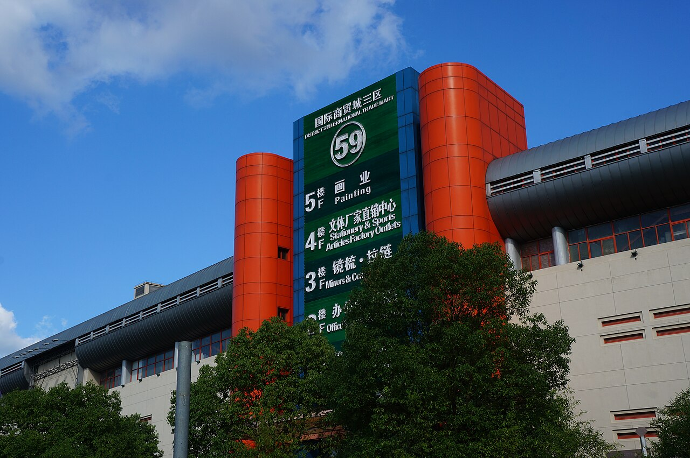

Direct answer: Start with one written brief, not a collection of unrelated photos. A procurement agent can use that brief to compare Yiwu Market supplier options, clarify MOQ and packing, coordinate sample or quality evidence, and keep received cartons traceable before export shipping.

1. Decide what the procurement agent should compare
Do not ask for “the best price” without defining the product. Suppliers may quote different materials, dimensions, pack counts or grades. Put the product reference, required variant, quantity, target market, desired packing and timeline in the same request. If a detail is flexible, mark it as a comparison point instead of leaving it unstated.
For first orders, it is reasonable to use product links or photos as a starting point. A stronger RFQ adds a short list of non-negotiables: function, key dimensions, material or finish, logo or label requirements, quality checks and destination.
2. Compare supplier quotes on the same scope
| Quote field | Why it matters | Buyer action |
|---|---|---|
| Product specification | Prevents two look-alike products from being treated as identical. | Confirm material, dimensions, colour and included parts. |
| MOQ and assortment | MOQ may apply by SKU, colour, inner pack or carton. | Request the exact rule for your proposed mix. |
| Packaging and carton data | Carton size and protection affect damage risk and freight volume. | Confirm retail pack, carton quantity, dimensions and marks. |
| Sample and lead time | Availability changes how a first order should be planned. | Ask what can be checked before bulk production. |
| Quality evidence | Defines what is checked before final shipment approval. | List critical defects, counts, labels and photos needed. |
3. Keep changes visible before production or purchase
Every change to a product, logo, quantity, packing or delivery date should be recorded against the original brief. This is especially important for a mixed Yiwu order, where different suppliers may receive different versions of the request. A simple approval note can prevent a revised colour, carton mark or accessory count from being missed at warehouse receiving.
Use the purchase-order change-control checklist when product or packaging details move after an initial quotation.
4. Use sample and QC evidence for the agreed risk points
Inspection should follow the product brief. For a storage item, that might mean dimensions, assembly points and carton protection. For a beauty accessory, it may mean finish, count, retail pack and colour. A pre-shipment check can confirm the agreed quantity, visible defects, labels and carton details, but it is more useful when those acceptance points were defined before goods are ready.
See the Yiwu quality-control service and the pre-shipment inspection checklist for a fuller buyer checklist.
5. Consolidate only with a receiving record
For multi-supplier orders, record each expected shipment before cartons arrive: supplier, SKU, quantity, carton count, packaging notes and whether the order is approved for consolidation. Match warehouse receipts against the packing list and keep exceptions separate until the buyer approves a correction or a shipping decision.
This makes it easier to calculate CBM, identify shortages and prepare an export handoff without losing the supplier trail. The carton marks and packing-list checklist explains the records that support this step.
Frequently asked questions
What should I send a Yiwu Market procurement agent before asking for quotes?
Send product photos or links, a description or drawing, quantity by SKU, target price, destination country, packaging needs, required quality checks and timing. These details let suppliers be compared on the same brief.
Can a Yiwu Market agent compare different booth quotes?
Yes. A useful comparison records the exact product scope, material or finish, MOQ, unit price, packaging, lead time, sample availability and stated quality requirements, rather than comparing headline prices alone.
When should warehouse consolidation begin?
Start consolidation after the buyer has an approved order and each supplier's SKU, expected carton count and packing requirements are recorded. Received cartons should stay traceable to the supplier and packing list before final shipping approval.
Prepare your first Yiwu Market RFQ
Send product links or photos, quantity, target price, packaging needs and destination country. YiwuBridge can use the same brief to compare supplier options and define practical next steps.